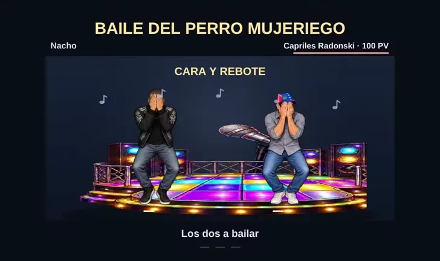
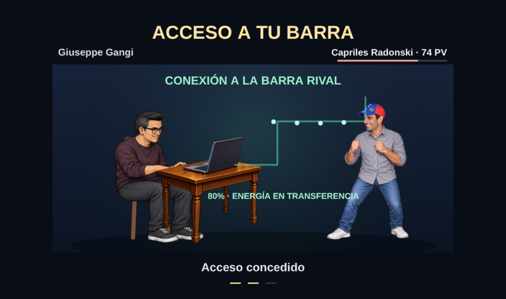
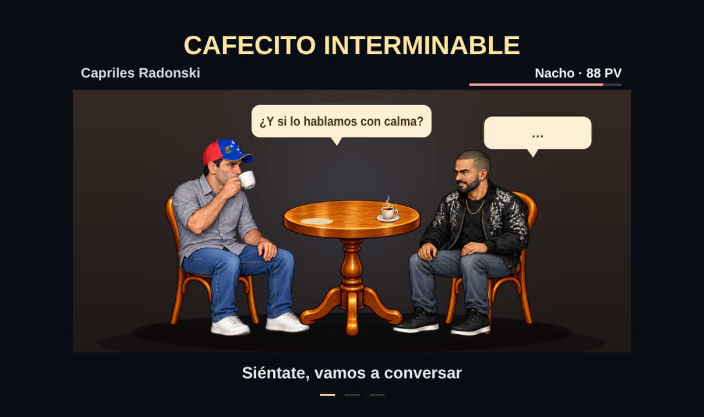

La versión actual conserva la arena, la cámara y el HUD. Ver la nueva grabación de Nacho y Capriles en combate. Las imágenes de esta página documentan el montaje anterior.
46 personajes · 368 poses nuevas · ambos bailan

Los dos siguen los ocho gestos del Short de Nacho, en el tramo 34,1–40,1 s. Cada personaje conserva sus dibujos y su vestuario.Grabación histórica sin audio. Actualmente: música original a volumen bajo; canción descartada.

La mesa tiene una escala proporcionada y la pantalla del portátil mira hacia Giuseppe.

Los 46 personajes tienen su dibujo sentado para conversar y tomar café con Capriles.